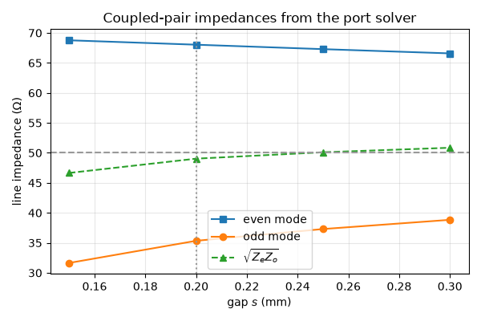
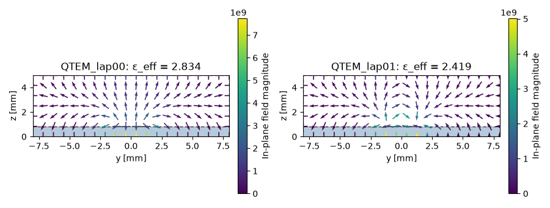
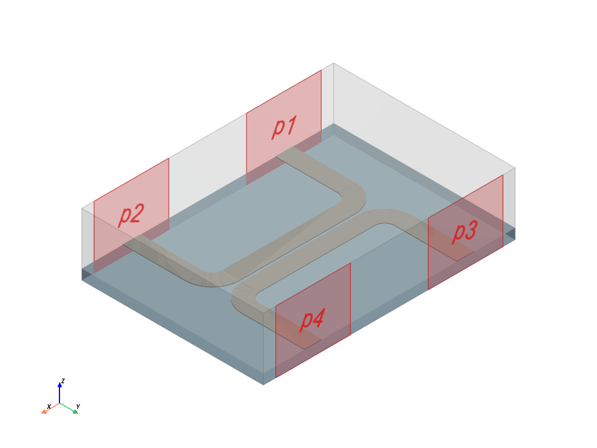
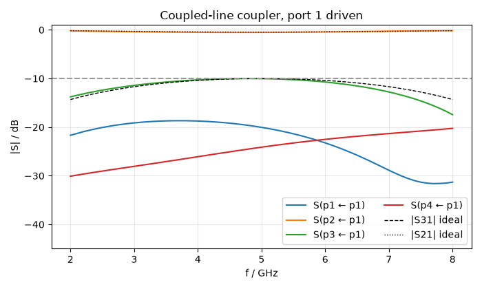
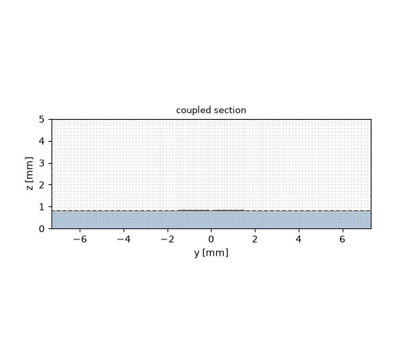

Note
Go to the end to download the full example code.
Coupled-line directional coupler: dimensioning the pair with the port solver#
Two microstrip lines running side by side for a quarter wavelength form a directional coupler: a fraction of the power entering one line leaves the near end of the other, and — ideally — nothing leaves its far end. The classic single-section design has two knobs, the gap between the lines and their width, and one number to hit: the coupling at the centre frequency. This guide sets a −10 dB coupler at 5 GHz on a 0.813 mm substrate and reads the result off a four-port S-parameter run.
Two things are new compared with the earlier microstrip pages:
the lines are traced from a path — a centreline that runs along the coupled section, turns through 90° and ends square on the box wall at a port, widened into copper of a given thickness in one call;
the coupled section is dimensioned with the port solver alone: a port across both lines returns the two modes of the pair, the even and the odd mode, each with its own line impedance and effective permittivity. The coupling follows from those impedances, and the quarter-wave length from the permittivities, before any time-domain run.
The reference is the standard coupled-line theory of the microwave textbooks (Pozar, Microwave Engineering, §7.6): the even- and odd-mode impedances of a matched coupler of coupling coefficient \(C\) are \(Z_{0e} = Z_0\sqrt{(1+C)/(1-C)}\) and \(Z_{0o} = Z_0\sqrt{(1-C)/(1+C)}\), and the coupled-port response over frequency is \(S_{31} = jC\sin\theta/(\sqrt{1-C^2}\cos\theta + j\sin\theta)\) with \(\theta\) the electrical length of the section. On microstrip the two modes travel at different speeds; the coupler’s directivity is what pays for that.
import matplotlib.pyplot as plt
import numpy as np
import magnelio as mio
from magnelio import geo, plots, ports
from magnelio.constants import C0
Given quantities#
Substrate, band and target. The copper is 35 µm thick — the real
thing, handled by the thin-metallisation path of the mesher, which
needs the min_cell_size floor set below.
eps_r = 3.55 # substrate permittivity
h_sub = 0.813e-3 # substrate height
t_cu = 35e-6 # copper thickness
h_box = 5.0e-3 # shield height above the ground plane
z0 = 50.0 # system impedance
f0 = 5.0e9 # centre frequency
f_min, f_max = 2.0e9, 8.0e9
coupling_db = -10.0 # target coupling at f0
substrate = mio.Material.from_isotropic(name="RO4003", epsilon=eps_r)
c_target = 10 ** (coupling_db / 20)
z_even_target = z0 * np.sqrt((1 + c_target) / (1 - c_target))
z_odd_target = z0 * np.sqrt((1 - c_target) / (1 + c_target))
print(f"target: C = {c_target:.3f}")
print(f" Z_even = {z_even_target:.1f} ohm, Z_odd = {z_odd_target:.1f} ohm")
target: C = 0.316
Z_even = 69.4 ohm, Z_odd = 36.0 ohm
The knobs#
w— line width. Sets the geometric mean \(\sqrt{Z_{0e} Z_{0o}}\), which must equal the system impedance for a matched coupler.s— gap between the lines. Sets the ratio \(Z_{0e}/Z_{0o}\), i.e. the coupling.the mesh resolution across the gap, which the design step and the coupler run must share: the impedances are properties of the grid as much as of the geometry.
Dimensioning the pair with the port solver#
A short slice of the coupled section — substrate, two lines, shield — with a port across its face. Ground and two lines are three conductors, so the port carries two line modes; the solver returns them as the pair’s even mode (both lines at the same potential, the field mostly under the lines) and odd mode (opposite potentials, the field concentrated in the gap), each with its own impedance and effective permittivity. No time-domain run is needed; the loop below takes a few seconds per gap.
def pair_modes(gap, length=3e-3, w_box=16e-3):
"""(Z_even, Z_odd, eps_even, eps_odd) of the coupled pair at one gap."""
model = mio.GeometryModel()
model.add(geo.Brick(origin=(0, -w_box / 2, 0), size=(length, w_box, h_sub), material=substrate))
air = geo.Brick(
origin=(0, -w_box / 2, h_sub), size=(length, w_box, h_box - h_sub), material="air"
)
lines = [
geo.Brick(origin=(0, yc - w / 2, h_sub), size=(length, w, t_cu), material="pec")
for yc in (-(w + gap) / 2, (w + gap) / 2)
]
model.add(geo.Difference(air, *lines))
for line in lines:
model.add(line)
model.add_port(ports.PortWaveguide(name="pair", plane="xmin", n_modes=2))
mesh = mio.Mesh.from_geometry(model, mesh_control, f_max=f_max)
report = mio.AnalysisScatteringTD(mesh=mesh, verbose=False).solve_ports()["pair"]
even, odd = report.modes
return even.z_line, odd.z_line, even.epsilon_eff, odd.epsilon_eff, report, model
rows = [pair_modes(gap) for gap in gaps]
z_even = np.array([r[0] for r in rows])
z_odd = np.array([r[1] for r in rows])
eps_even = np.array([r[2] for r in rows])
eps_odd = np.array([r[3] for r in rows])
coupling = (z_even - z_odd) / (z_even + z_odd)
for gap, ze, zo, c in zip(gaps, z_even, z_odd, coupling):
print(
f"s = {gap * 1e3:.2f} mm: Z_even = {ze:5.1f} ohm, Z_odd = {zo:5.1f} ohm, "
f"sqrt(Ze Zo) = {np.sqrt(ze * zo):5.1f} ohm, C = {20 * np.log10(c):6.2f} dB"
)
s = 0.15 mm: Z_even = 68.8 ohm, Z_odd = 31.7 ohm, sqrt(Ze Zo) = 46.7 ohm, C = -8.64 dB
s = 0.20 mm: Z_even = 68.0 ohm, Z_odd = 35.3 ohm, sqrt(Ze Zo) = 49.0 ohm, C = -10.00 dB
s = 0.25 mm: Z_even = 67.3 ohm, Z_odd = 37.3 ohm, sqrt(Ze Zo) = 50.1 ohm, C = -10.85 dB
s = 0.30 mm: Z_even = 66.6 ohm, Z_odd = 38.8 ohm, sqrt(Ze Zo) = 50.9 ohm, C = -11.59 dB
The last report, printed: the even mode comes first (the larger effective permittivity — more of its field is in the substrate), the odd mode second.
print(rows[-1][4])
Port 'pair' — 2 mode(s)
z_line = 66.58 Ω (numerical)
[0] QTEM_lap00 TEM f_c = 0.0000 GHz z_line = 66.58 Ω ε_eff = 2.838
[1] QTEM_lap01 TEM f_c = 0.0000 GHz z_line = 38.84 Ω ε_eff = 2.440
Interpolate the gap that hits the target coupling, and take the electrical length of the section from the mean of the two effective permittivities — the compromise a single-section microstrip coupler has to make, since neither mode can be a quarter wave at f0 without the other being off.
s_design = float(np.interp(c_target, coupling[::-1], gaps[::-1]))
eps_mean = float(np.interp(s_design, gaps, 0.5 * (eps_even + eps_odd)))
length = C0 / f0 / np.sqrt(eps_mean) / 4.0
print(f"gap for {coupling_db:.0f} dB: s = {s_design * 1e3:.3f} mm")
print(f"quarter-wave section at eps_mean = {eps_mean:.3f}: L = {length * 1e3:.2f} mm")
fig, ax = plt.subplots(figsize=(6.0, 4.0))
ax.plot(gaps * 1e3, z_even, "s-", label="even mode")
ax.plot(gaps * 1e3, z_odd, "o-", label="odd mode")
ax.plot(gaps * 1e3, np.sqrt(z_even * z_odd), "^--", label=r"$\sqrt{Z_e Z_o}$")
ax.axhline(z0, color="0.6", ls="--")
ax.axvline(s_design * 1e3, color="0.6", ls=":")
ax.set_xlabel("gap $s$ (mm)")
ax.set_ylabel("line impedance (Ω)")
ax.set_title("Coupled-pair impedances from the port solver")
ax.grid(alpha=0.3)
ax.legend()
fig.tight_layout()

gap for -10 dB: s = 0.200 mm
quarter-wave section at eps_mean = 2.626: L = 9.25 mm
The two mode profiles on the port face — even and odd — as the solver sees them:
_, _, _, _, report, section_model = pair_modes(s_design)
fig, axes = plt.subplots(1, 2, figsize=(9.0, 3.4))
for ax, mode in zip(axes, report.modes):
mode.plot(
field="E",
ax=ax,
title=f"{mode.name}: ε_eff = {mode.epsilon_eff:.3f}",
geometry=section_model,
)
fig.tight_layout()

The coupler#
Each line is one path: from its port on the box wall, straight in,
a 90° arc onto the coupled section, along it, an arc back out and
straight to the second port (given only a centre, arc_to draws
the shorter of the two arcs — the quarter turn, on either line).
traced widens the centreline into copper of thickness t_cu
on top of the substrate; caps="flat" ends the tracks square on
the port planes. Line A (ports 1 and 2) runs along the ymin
wall, line B (ports 3 and 4) along ymax.
r_bend = 1.5e-3 # bend radius (centreline)
feed = 5.0e-3 # straight feed between the bend and the wall
x_port = length / 2 + r_bend # x position of the ports
half_w = (w + s_design) / 2 + r_bend + feed # half the box width
half_x = x_port + 4.0e-3 # half the box length
def line_track(side):
"""Copper track of line A (side=-1, toward ymin) or line B (+1, toward ymax)."""
yc = side * (w + s_design) / 2 # centreline of the coupled section
wall = side * half_w
z = h_sub
centreline = (
geo.Path((-x_port, wall, z))
.line_to((-x_port, yc + side * r_bend, z))
.arc_to((-length / 2, yc, z), center=(-length / 2, yc + side * r_bend, z))
.line_to((length / 2, yc, z))
.arc_to((x_port, yc + side * r_bend, z), center=(length / 2, yc + side * r_bend, z))
.line_to((x_port, wall, z))
.curve()
)
return centreline.traced(width=w, thickness=t_cu, caps="flat", normal="z", material="pec")
line_a, line_b = line_track(-1), line_track(+1)
box = dict(origin=(-half_x, -half_w, 0.0), size=(2 * half_x, 2 * half_w, h_box))
model = mio.GeometryModel()
model.add(
geo.Brick(
origin=(-half_x, -half_w, 0.0), size=(2 * half_x, 2 * half_w, h_sub), material=substrate
)
)
air = geo.Brick(
origin=(-half_x, -half_w, h_sub), size=(2 * half_x, 2 * half_w, h_box - h_sub), material="air"
)
model.add(geo.Difference(air, line_a, line_b))
model.add(line_a)
model.add(line_b)
GeometryModel(4 shapes, background=air)
Four window ports, two per wall, each a 6 mm wide slice of the wall around its track end:
def window(xc):
return ((xc - 3e-3, None, 0.0), (xc + 3e-3, None, h_box))
model.add_port(ports.PortWaveguide(name="p1", plane="ymin", corners=window(-x_port))) # input
model.add_port(ports.PortWaveguide(name="p2", plane="ymin", corners=window(+x_port))) # through
model.add_port(ports.PortWaveguide(name="p3", plane="ymax", corners=window(-x_port))) # coupled
model.add_port(ports.PortWaveguide(name="p4", plane="ymax", corners=window(+x_port))) # isolated
model.plot()

Mesh and run — the same mesh_control as the design step, so the
coupled section is solved on the grid it was dimensioned on.
mesh = mio.Mesh.from_geometry(model, mesh_control, f_max=f_max)
print(f"grid: {mesh.Nx} x {mesh.Ny} x {mesh.Nz} cells")
analysis = mio.AnalysisScatteringTD(mesh=mesh, f_min=f_min, verbose=False)
f_axis = np.linspace(f_min, f_max, 61)
result = analysis.run(f_axis=f_axis, excited=["p1"])
grid: 138 x 104 x 34 cells
The scoreboard#
Coupling at f0 against the target; directivity — the coupled port against the isolated one — and match.
f = np.asarray(result.f_axis)
i0 = int(np.argmin(np.abs(f - f0)))
s11, s21, s31, s41 = (result.db(p, "p1") for p in ("p1", "p2", "p3", "p4"))
print("--- current settings — tune s and w until this meets your spec ---")
print(f"coupling |S31| at f0 : {s31[i0]:6.2f} dB (target {coupling_db:.0f} dB)")
print(f"peak coupling : {s31.max():6.2f} dB at {f[np.argmax(s31)] / 1e9:.2f} GHz")
print(f"directivity at f0 : {s31[i0] - s41[i0]:6.2f} dB")
print(f"isolation |S41| at f0 : {s41[i0]:6.2f} dB")
print(f"match |S11| at f0 : {s11[i0]:6.2f} dB")
print(f"through |S21| at f0 : {s21[i0]:6.2f} dB")
--- current settings — tune s and w until this meets your spec ---
coupling |S31| at f0 : -10.03 dB (target -10 dB)
peak coupling : -10.01 dB at 4.80 GHz
directivity at f0 : 14.09 dB
isolation |S41| at f0 : -24.12 dB
match |S11| at f0 : -20.04 dB
through |S21| at f0 : -0.52 dB
Against the ideal coupled-line response#
The textbook curves for the designed \(C\) and the section’s electrical length \(\theta = \beta L\) at the mean permittivity. The simulated coupling follows the ideal curve; the isolation does not stay at the ideal −∞ dB — that is the even/odd velocity mismatch of microstrip, and the reason the isolation is the number to watch on this kind of coupler.
theta = 2 * np.pi * f * np.sqrt(eps_mean) / C0 * length
denom = np.sqrt(1 - c_target**2) * np.cos(theta) + 1j * np.sin(theta)
s31_ideal = 1j * c_target * np.sin(theta) / denom
s21_ideal = np.sqrt(1 - c_target**2) / denom
fig, ax = plt.subplots(figsize=(7.0, 4.2))
result.plot_s(("p1", "p1"), ("p2", "p1"), ("p3", "p1"), ("p4", "p1"), ax=ax)
ax.plot(f / 1e9, 20 * np.log10(np.abs(s31_ideal)), "k--", lw=1, label="|S31| ideal")
ax.plot(f / 1e9, 20 * np.log10(np.abs(s21_ideal)), "k:", lw=1, label="|S21| ideal")
ax.axhline(coupling_db, color="0.6", ls="--")
ax.set_ylim(-45, 1)
ax.set_title("Coupled-line coupler, port 1 driven")
ax.legend(loc="lower right", ncol=2)
fig.tight_layout()

The coupled section on its grid — the gap holds a few cells, the copper is one thin-sheet layer.

Carry it over#
Transfer s_design, w and length into your layout once the
scoreboard meets your spec; a tighter coupling means a smaller gap,
and every change of substrate, width or mesh resolution means
running the design step again. The mode ordering of the pair — even
first — and the meaning of its impedances are described in the ports
chapter of the methods section.
Total running time of the script: (2 minutes 7.008 seconds)